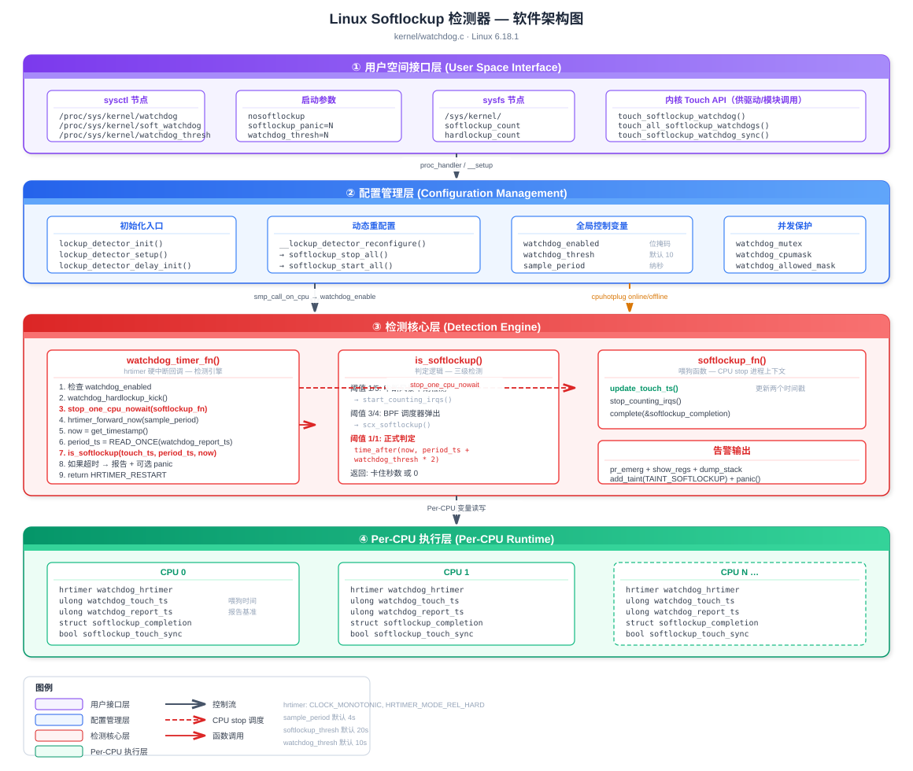
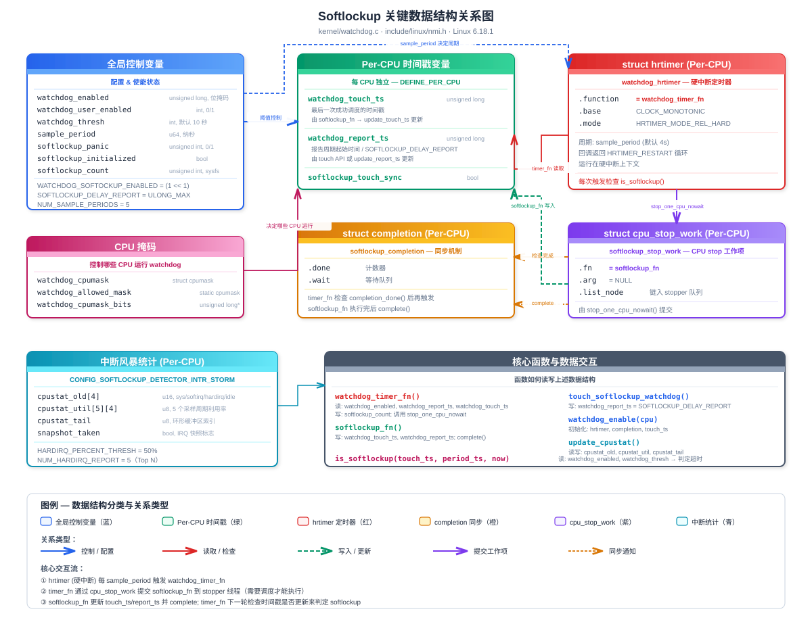

基于 Linux 6.18.1 源码 kernel/watchdog.c
1. 软件架构总览
2. 关键数据结构及其关系
3. 实现原理
4. 用法总结
5. Softlockup 发生意味着什么
6. QEMU 模拟实验
7. 面试经典问题与答案
Softlockup 检测器的软件架构分为四个层次：用户空间接口层、配置管理层、检测核心层、Per-CPU 执行层。用户通过 sysctl / 启动参数配置检测参数，配置管理层协调 watchdog 在各 CPU 上的启停，检测核心层基于 hrtimer 硬中断周期性检查调度器是否正常运行，Per-CPU 层维护独立的时间戳与状态。

架构图说明
/proc/sys/kernel/ 下的 sysctl 节点和内核启动参数提供配置入口lockup_detector_init() / lockup_detector_reconfigure() 协调全局配置变更，通过 watchdog_mutex 保护并发访问watchdog_timer_fn() 作为 hrtimer 硬中断回调是检测引擎，softlockup_fn() 通过 CPU stop 机制执行喂狗操作watchdog_touch_ts / watchdog_report_ts）、completion 同步对象Softlockup 检测器不依赖复杂的自定义结构体，而是通过 Per-CPU 变量 和 全局控制变量 的配合实现。每个 CPU 拥有独立的 hrtimer 和时间戳变量，全局变量控制使能状态和阈值。

数据结构说明
watchdog_enabled（位掩码）、watchdog_thresh（阈值秒数）、sample_period（采样周期纳秒）、watchdog_cpumask（运行 CPU 掩码）softlockup_fn 更新）softlockup_fn 或 touch API 更新）touch_ts 用于计算锁住时长，report_ts 用于判定是否超时Softlockup 检测器的核心思想是：如果一个 CPU 长时间不进行进程调度（即不让出 CPU），说明该 CPU 可能被某个内核路径"软锁住"了。
实现方式：
sample_period（默认 4 秒）softlockup_fn()（该函数只能在进程上下文中执行，需要调度）softlockup_fn() 执行时会更新时间戳（"喂狗"）watchdog_thresh * 2 秒，默认 20 秒），说明调度器卡住了关键公式：
$$\text{softlockup\_thresh} = \text{watchdog\_thresh} \times 2$$
$$\text{sample\_period} = \frac{\text{softlockup\_thresh}}{5} \text{ (seconds)}$$
默认值：watchdog_thresh = 10s → softlockup_thresh = 20s → sample_period = 4s
lockup_detector_init() // 内核启动时调用
├── cpumask_copy(&watchdog_cpumask, housekeeping_cpumask(HK_TYPE_TIMER))
├── watchdog_hardlockup_probe() // 探测硬锁检测器
└── lockup_detector_setup()
├── lockup_detector_update_enable() // 设置 watchdog_enabled 位掩码
├── __lockup_detector_reconfigure()
│ ├── set_sample_period() // 计算采样周期
│ └── softlockup_start_all()
│ └── for_each_cpu(cpu, &watchdog_allowed_mask)
│ └── smp_call_on_cpu(cpu, softlockup_start_fn)
│ └── watchdog_enable(cpu)
│ ├── init_completion(done)
│ ├── hrtimer_setup(hrtimer, watchdog_timer_fn,
│ │ CLOCK_MONOTONIC, HRTIMER_MODE_REL_HARD)
│ ├── hrtimer_start(hrtimer, sample_period)
│ ├── update_touch_ts() // 初始化时间戳
│ └── watchdog_hardlockup_enable(cpu)
└── softlockup_initialized = truewatchdog_timer_fn() 是整个检测机制的核心引擎，运行在 硬中断上下文 (HRTIMER_MODE_REL_HARD)：
static enum hrtimer_restart watchdog_timer_fn(struct hrtimer *hrtimer)
{
// 1. 检查是否启用
if (!watchdog_enabled) return HRTIMER_NORESTART;
if (panic_in_progress()) return HRTIMER_NORESTART;
// 2. 踢一下硬锁检测器
watchdog_hardlockup_kick();
// 3. 如果上次 softlockup_fn 已完成，再次触发
if (completion_done(this_cpu_ptr(&softlockup_completion))) {
reinit_completion(this_cpu_ptr(&softlockup_completion));
stop_one_cpu_nowait(smp_processor_id(),
softlockup_fn, NULL,
this_cpu_ptr(&softlockup_stop_work));
}
// 4. 重新调度 hrtimer
hrtimer_forward_now(hrtimer, ns_to_ktime(sample_period));
// 5. 读取时间戳并检测
now = get_timestamp();
period_ts = READ_ONCE(*this_cpu_ptr(&watchdog_report_ts));
// 6. 如果是被 touch 过的（SOFTLOCKUP_DELAY_REPORT），重置
if (period_ts == SOFTLOCKUP_DELAY_REPORT) {
update_report_ts();
return HRTIMER_RESTART;
}
// 7. 检测 softlockup
touch_ts = __this_cpu_read(watchdog_touch_ts);
duration = is_softlockup(touch_ts, period_ts, now);
if (unlikely(duration)) {
// 报告 softlockup ...
}
return HRTIMER_RESTART;
}softlockup_fn() 是真正的"看门狗喂狗"函数，通过 stop_one_cpu_nowait() 触发，运行在 进程上下文（migration/N 内核线程）：
static int softlockup_fn(void *data)
{
update_touch_ts(); // 更新 watchdog_touch_ts 和 watchdog_report_ts
stop_counting_irqs(); // 停止中断计数（如果开启了中断风暴检测）
complete(this_cpu_ptr(&softlockup_completion)); // 通知 hrtimer 本轮完成
return 0;
}关键点：softlockup_fn 必须等到 CPU 能够执行进程上下文代码时才能运行。如果 CPU 一直在执行内核代码不让出（如死循环、长时间关中断），softlockup_fn 就无法执行，时间戳就不会更新，最终触发检测。
static int is_softlockup(unsigned long touch_ts,
unsigned long period_ts,
unsigned long now)
{
if ((watchdog_enabled & WATCHDOG_SOFTOCKUP_ENABLED) && watchdog_thresh) {
// 中断风暴早期检测（1/5 阈值）
if (time_after_eq(now, period_ts + get_softlockup_thresh() / NUM_SAMPLE_PERIODS)
&& need_counting_irqs())
start_counting_irqs();
// BPF 调度器弹出（3/4 阈值）
if (time_after_eq(now, period_ts + get_softlockup_thresh() * 3 / 4))
scx_softlockup(now - touch_ts);
// 正式判定（完整阈值）
if (time_after(now, period_ts + get_softlockup_thresh()))
return now - touch_ts; // 返回卡住的秒数
}
return 0;
}判定时间线（默认 watchdog_thresh = 10，softlockup_thresh = 20s）：
| 时间点 | 事件 |
|---|---|
| 0s | softlockup_fn 更新 period_ts |
| 4s | 第一个 sample_period 结束，开始中断统计检查 |
| 15s | 达到 3/4 阈值，通知 sched_ext 弹出 BPF 调度器 |
| 20s | 触发 softlockup 报告 |
Touch 机制允许内核代码在已知会长时间占用 CPU 的路径中主动"抚摸"看门狗，避免误报：
| API | 作用 | 使用场景 |
|---|---|---|
touch_softlockup_watchdog() |
设置 watchdog_report_ts = SOFTLOCKUP_DELAY_REPORT，同时 touch workqueue watchdog |
通用接口，驱动/模块常用 |
touch_softlockup_watchdog_sched() |
仅设置 watchdog_report_ts = SOFTLOCKUP_DELAY_REPORT |
调度器内部路径（如 idle 进入） |
touch_all_softlockup_watchdogs() |
touch 所有 CPU 的 watchdog | 全局性长操作（如 suspend/resume） |
touch_softlockup_watchdog_sync() |
设置 softlockup_touch_sync = true + delay report |
需要同步 sched_clock 的场景 |
当 watchdog_timer_fn 检测到 period_ts == SOFTLOCKUP_DELAY_REPORT 时，会调用 update_report_ts() 重置报告时间戳，但不会修改 watchdog_touch_ts——这保证了最终报告的"stuck for Xs"时间是真实的卡住时长。
当 CONFIG_SOFTLOCKUP_DETECTOR_INTR_STORM 开启时，softlockup 检测器可以额外诊断中断风暴：
sample_period 统计一次 CPU 各状态时间（system/softirq/hardirq/idle）HARDIRQ_PERCENT_THRESH（50%），开始逐 IRQ 计数当 is_softlockup() 返回非零值时：
1. softlockup_count++ // sysfs 计数
2. 如果 softlockup_all_cpu_backtrace，取全局锁防止并发 dump
3. update_report_ts() // 重置报告周期
4. pr_emerg("BUG: soft lockup - CPU#%d stuck for %us! [%s:%d]\n", ...)
5. report_cpu_status() // 打印 CPU 利用率 + 中断统计
6. print_modules() // 打印已加载模块
7. print_irqtrace_events(current) // 打印中断跟踪
8. show_regs(regs) / dump_stack() // 打印寄存器/调用栈
9. add_taint(TAINT_SOFTLOCKUP) // 标记内核 tainted
10. if (softlockup_panic) panic("softlockup: hung tasks") // 可选 panic| 配置项 | 说明 |
|---|---|
CONFIG_SOFTLOCKUP_DETECTOR |
启用 softlockup 检测器（默认 y） |
CONFIG_BOOTPARAM_SOFTLOCKUP_PANIC |
检测到 softlockup 时自动 panic（默认 n） |
CONFIG_SOFTLOCKUP_DETECTOR_INTR_STORM |
启用中断风暴辅助诊断 |
CONFIG_DETECT_HUNG_TASK |
hung task 检测（与 softlockup 互补） |
| 参数 | 说明 | 示例 |
|---|---|---|
nowatchdog |
完全禁用 watchdog | nowatchdog |
nosoftlockup |
仅禁用 softlockup 检测 | nosoftlockup |
softlockup_panic=1 |
检测到 softlockup 时 panic | softlockup_panic=1 |
watchdog_thresh=N |
设置阈值为 N 秒（实际超时 2N 秒） | watchdog_thresh=20 |
| sysctl 路径 | 默认值 | 说明 |
|---|---|---|
/proc/sys/kernel/watchdog |
1 | 主开关（同时控制 soft + hard） |
/proc/sys/kernel/soft_watchdog |
1 | softlockup 独立开关 |
/proc/sys/kernel/watchdog_thresh |
10 | 阈值秒数（0 = 禁用） |
/proc/sys/kernel/softlockup_panic |
0 | 是否 panic |
/proc/sys/kernel/softlockup_all_cpu_backtrace |
0 | 是否 dump 所有 CPU 调用栈 |
/proc/sys/kernel/watchdog_cpumask |
全部 housekeeping CPU | 运行 watchdog 的 CPU 掩码 |
运行时调整示例：
# 调整阈值为 30 秒（实际超时 60 秒）
echo 30 > /proc/sys/kernel/watchdog_thresh
# 禁用 softlockup 检测
echo 0 > /proc/sys/kernel/soft_watchdog
# 启用 panic-on-softlockup
echo 1 > /proc/sys/kernel/softlockup_panic
# 限制 watchdog 仅在 CPU 0-3 上运行
echo 0-3 > /proc/sys/kernel/watchdog_cpumask
# 启用所有 CPU backtrace
echo 1 > /proc/sys/kernel/softlockup_all_cpu_backtrace当编写可能长时间执行的内核代码时，应在合适位置调用 touch 函数避免误报：
#include <linux/nmi.h>
void my_long_running_function(void)
{
int i;
for (i = 0; i < HUGE_COUNT; i++) {
do_work(i);
// 每处理一批数据后 touch watchdog
if (!(i % 10000))
touch_softlockup_watchdog();
}
}常见使用场景：
touch_all_softlockup_watchdogs()touch_softlockup_watchdog_sched()典型 softlockup 告警：
BUG: soft lockup - CPU#2 stuck for 23s! [kworker/2:1:1234]
CPU#2 Utilization every 4000ms during lockup:
#1: 98% system, 0% softirq, 2% hardirq, 0% idle
#2: 97% system, 0% softirq, 3% hardirq, 0% idle
#3: 99% system, 0% softirq, 1% hardirq, 0% idle
#4: 98% system, 1% softirq, 1% hardirq, 0% idle
#5: 97% system, 0% softirq, 3% hardirq, 0% idle
Modules linked in: my_driver ...
CPU: 2 PID: 1234 Comm: kworker/2:1 Tainted: G L ...
Call trace:
my_driver_process+0x1a4/0x200 [my_driver]
...解读要点：
| 场景 | 原因 | 解决方案 |
|---|---|---|
| 虚拟机频繁触发 | 宿主机 CPU 超卖导致 vCPU 被调度出去 | 增大 watchdog_thresh 或设 nosoftlockup |
| 驱动初始化触发 | 硬件轮询等待超时 | 在等待循环中调用 touch_softlockup_watchdog() |
| 关中断代码触发 | 长时间 local_irq_disable() |
重构代码减少关中断时间 |
| nohz_full CPU 触发 | 无 tick 的 CPU 无法运行 watchdog | 默认已排除 nohz_full CPU |
| RCU stall 伴随触发 | 通常与 softlockup 同一根因 | 检查 call trace 定位根因 |
查看 softlockup 统计：
# 查看 softlockup 触发次数（需 CONFIG_SYSFS）
cat /sys/kernel/softlockup_count
# 查看当前配置
cat /proc/sys/kernel/watchdog_thresh
cat /proc/sys/kernel/soft_watchdogSoftlockup 的核心含义是：某个 CPU 上的调度器已经超过 watchdog_thresh * 2 秒（默认 20 秒）没有执行进程切换。
这说明该 CPU 上正在执行的内核代码路径存在以下某种情况：
| 状态 | 说明 |
|---|---|
| 内核态不让出 CPU | 某段内核代码持续执行，不调用 schedule() 或任何可能导致调度的函数 |
| 关抢占 (preempt_disable) | 代码关闭了内核抢占，调度器无法抢占当前任务 |
| 持有自旋锁 (spinlock) | 自旋锁隐式关抢占，长时间持锁 = 长时间不可调度 |
| 中断上下文停不下来 | 硬中断/软中断处理函数持续执行过久 |
关键区分：Softlockup ≠ 死锁。Softlockup 意味着 CPU 仍在运行代码（中断还能响应），只是不执行调度。真正的死锁（两个任务互相等待自旋锁）是 hardlockup 或直接 hang。
Softlockup 发生
│
┌──────────────┼──────────────┐
▼ ▼ ▼
该 CPU 上的 其他 CPU 可能 系统整体
所有任务饿死 受间接影响 可能降级
│ │ │
┌──────┼─────┐ ┌───┼────┐ ┌───┼────┐
│用户进程无法│ │跨CPU锁 │ │RCU stall│
│被调度执行 │ │等待超时 │ │连锁触发 │
│定时器回调 │ │IPI 响应 │ │内核 taint│
│无法执行 │ │延迟增大 │ │可选 panic│
└────────────┘ └────────┘ └─────────┘具体影响：
rcu_sched stall 连锁报告TAINT_SOFTLOCKUP (L) 标记，后续任何 oops 都会显示 tainted| 分类 | 占比（经验值） | 典型场景 | 内核日志特征 |
|---|---|---|---|
| 驱动 bug | ~40% | 硬件轮询死循环、DMA 等待无超时 | Call trace 指向驱动模块 |
| 死循环/活锁 | ~25% | 内核路径逻辑错误导致无限循环 | 100% system，单一函数反复出现 |
| 锁竞争 | ~15% | 自旋锁高竞争、优先级反转 | 多个 CPU 同时卡住，Call trace 含 _raw_spin_lock |
| 中断风暴 | ~10% | 硬件故障产生海量中断 | 高 hardirq%，Top IRQ 计数异常 |
| 虚拟化误报 | ~10% | 宿主机 CPU 超卖，vCPU 被调度走 | 无明显 CPU 忙碌，VM 场景 |
| 异常类型 | 与 Softlockup 的关系 |
|---|---|
| Hardlockup | CPU 连中断都无法响应（hrtimer 都不能触发），比 softlockup 更严重。通常由 NMI watchdog 检测 |
| RCU stall | 常与 softlockup 同时出现。CPU 不调度 → 无法通过 RCU quiescent state → RCU stall。根因相同 |
| Hung task | 进程在 TASK_UNINTERRUPTIBLE 超过 120s。关注的是单个任务等待 I/O，与 CPU 调度无关 |
| OOM kill | 内存不足时杀进程。如果 OOM 路径卡住（如等锁），可能间接引发 softlockup |
| Kernel panic | softlockup 本身可配置触发 panic (softlockup_panic=1) |
前提：已编译好带 CONFIG_SOFTLOCKUP_DETECTOR=y 的内核镜像。
# 启动 QEMU（以 arm64 为例）
qemu-system-aarch64 \
-M virt \
-cpu cortex-a72 \
-smp 2 \
-m 1024 \
-kernel Image \
-initrd rootfs.cpio.gz \
-append "console=ttyAMA0 watchdog_thresh=5" \
-nographic
# x86_64 示例
qemu-system-x86_64 \
-kernel bzImage \
-initrd rootfs.cpio.gz \
-append "console=ttyS0 watchdog_thresh=5" \
-smp 2 -m 1024 \
-nographic提示：设 watchdog_thresh=5 可将超时缩短到 10 秒，加快实验速度。
编写一个故意死循环的内核模块：
// softlockup_test.c
#include <linux/module.h>
#include <linux/kernel.h>
#include <linux/kthread.h>
#include <linux/delay.h>
static struct task_struct *test_thread;
static int lockup_thread(void *data)
{
pr_info("softlockup_test: starting busy loop on CPU %d\n",
smp_processor_id());
/*
* 关闭抢占后死循环 —— 经典 softlockup 场景
* 中断仍然可以响应，所以 hrtimer 能触发 watchdog_timer_fn
* 但调度器无法切换进程
*/
preempt_disable();
while (!kthread_should_stop()) {
cpu_relax(); // 避免编译器优化掉循环
}
preempt_enable();
return 0;
}
static int __init softlockup_test_init(void)
{
pr_info("softlockup_test: loading module\n");
test_thread = kthread_run(lockup_thread, NULL, "lockup_test");
if (IS_ERR(test_thread))
return PTR_ERR(test_thread);
return 0;
}
static void __exit softlockup_test_exit(void)
{
if (test_thread)
kthread_stop(test_thread);
pr_info("softlockup_test: module unloaded\n");
}
module_init(softlockup_test_init);
module_exit(softlockup_test_exit);
MODULE_LICENSE("GPL");
MODULE_DESCRIPTION("Softlockup trigger test module");对应的 Makefile：
obj-m += softlockup_test.o
KDIR ?= /lib/modules/$(shell uname -r)/build
all:
$(MAKE) -C $(KDIR) M=$(PWD) modules
clean:
$(MAKE) -C $(KDIR) M=$(PWD) clean在 QEMU guest 中加载：
# 加载模块
insmod softlockup_test.ko
# 约 10 秒后（watchdog_thresh=5 时）会看到：
# BUG: soft lockup - CPU#0 stuck for 11s! [lockup_test:xxx]// softlockup_preempt_test.c
#include <linux/module.h>
#include <linux/kernel.h>
#include <linux/delay.h>
#include <linux/preempt.h>
static int __init preempt_test_init(void)
{
unsigned long j;
pr_info("preempt_test: disabling preemption for 25s\n");
preempt_disable();
j = jiffies + 25 * HZ; // 25 秒
while (time_before(jiffies, j)) {
cpu_relax();
}
preempt_enable();
pr_info("preempt_test: done\n");
return 0;
}
static void __exit preempt_test_exit(void) { }
module_init(preempt_test_init);
module_exit(preempt_test_exit);
MODULE_LICENSE("GPL");此模块在 module_init 中关抢占 25 秒，足以触发默认 20 秒阈值的 softlockup。
// softlockup_spinlock_test.c
#include <linux/module.h>
#include <linux/kernel.h>
#include <linux/spinlock.h>
#include <linux/delay.h>
static DEFINE_SPINLOCK(test_lock);
static int __init spinlock_test_init(void)
{
unsigned long j;
pr_info("spinlock_test: holding spinlock for 25s\n");
/*
* spin_lock() 仅关抢占，不关中断
* → hrtimer 仍能触发 → 能检测到 softlockup
*
* 如果改成 spin_lock_irqsave() 则关中断 + 关抢占
* → hrtimer 无法触发 → 变成 hardlockup
*/
spin_lock(&test_lock);
j = jiffies + 25 * HZ;
while (time_before(jiffies, j)) {
cpu_relax();
}
spin_unlock(&test_lock);
pr_info("spinlock_test: done\n");
return 0;
}
static void __exit spinlock_test_exit(void) { }
module_init(spinlock_test_init);
module_exit(spinlock_test_exit);
MODULE_LICENSE("GPL");对比实验：将spin_lock()改为spin_lock_irqsave()后重新加载，观察触发的是 hardlockup 而非 softlockup（前提是 NMI watchdog 可用）。
# 实验前：确认 watchdog 已启用
cat /proc/sys/kernel/soft_watchdog # 应为 1
cat /proc/sys/kernel/watchdog_thresh # 查看阈值
# 加载测试模块后观察 dmesg
dmesg -w
# 期望输出：
# [ xx.xxx] BUG: soft lockup - CPU#0 stuck for 22s! [lockup_test:123]
# [ xx.xxx] CPU: 0 PID: 123 Comm: lockup_test Not tainted ...
# [ xx.xxx] Call trace:
# [ xx.xxx] lockup_thread+0x28/0x40 [softlockup_test]
# [ xx.xxx] kthread+0x124/0x130
# [ xx.xxx] ret_from_fork+0x10/0x20
# 验证 taint 标志
cat /proc/sys/kernel/tainted
# 输出包含 TAINT_SOFTLOCKUP (值 16384)
# 查看触发计数
cat /sys/kernel/softlockup_count
# 如果想测试 panic 行为
echo 1 > /proc/sys/kernel/softlockup_panic
insmod softlockup_test.ko
# → 系统将 panic 并停止（或 reboot，取决于 panic= 参数）
# 卸载模块恢复
rmmod softlockup_testQEMU 调试技巧：
# 结合 GDB 观察 watchdog_timer_fn 执行
qemu-system-aarch64 ... -s -S &
aarch64-linux-gnu-gdb vmlinux
(gdb) target remote :1234
(gdb) break watchdog_timer_fn
(gdb) continue
# 在 hrtimer 断点处检查时间戳
(gdb) p *this_cpu_ptr(&watchdog_touch_ts)
(gdb) p *this_cpu_ptr(&watchdog_report_ts)
(gdb) p watchdog_threshQ1: 什么是 softlockup？与 hardlockup 有什么区别？
A: Softlockup 是指一个 CPU 长时间不执行进程调度（默认 20 秒），但中断仍然可以响应。Hardlockup 是指 CPU 连中断都无法响应（hrtimer 回调都无法执行）。
| 对比项 | Softlockup | Hardlockup |
|---|---|---|
| 中断响应 | 正常 | 不响应 |
| 检测方式 | hrtimer 硬中断 + CPU stop | NMI（不可屏蔽中断） |
| 检测代码 | watchdog_timer_fn() |
watchdog_hardlockup_check() |
| 阈值 | watchdog_thresh × 2 |
watchdog_thresh |
| 典型原因 | 关抢占死循环、长时间持锁 | 关中断死循环、NMI 处理卡死 |
Q2: Softlockup 的默认阈值是多少？为什么是这个值？
A: 默认 watchdog_thresh = 10 秒，实际 softlockup 判定阈值 = 10 × 2 = 20 秒。
设计为 hardlockup 阈值的 2 倍，原因是：
Q3: 为什么 softlockup 的检测用 hrtimer 而不是普通 timer？
A: 因为 softlockup 要检测的就是"调度器是否卡住"。普通 timer（timer_list）的回调运行在软中断上下文（TIMER_SOFTIRQ），如果 CPU 忙于内核代码不调度，软中断也无法执行，无法完成检测。而 hrtimer 配置为 HRTIMER_MODE_REL_HARD，回调直接运行在硬中断上下文，只要中断没被关闭就能触发。
Q4: 请描述 softlockup 的检测流程。
A: 核心流程分三步：
sample_period（默认 4 秒）在硬中断中触发 watchdog_timer_fn()watchdog_timer_fn() 通过 stop_one_cpu_nowait() 提交 softlockup_fn() 到 stopper 线程。stopper 线程是最高优先级的内核线程，只有 CPU 能调度时才能执行softlockup_fn() 执行时更新 watchdog_touch_ts 时间戳。如果该时间戳超过 watchdog_thresh * 2 秒未更新，说明 softlockup_fn() 一直没机会执行，即调度器卡住了hrtimer (硬中断) stopper 线程 (进程上下文)
│ │
│── watchdog_timer_fn() ──────────────▶ softlockup_fn()
│ 检查 period_ts + thresh < now update_touch_ts()
│ 如果超时 → 报警 complete()
│ │
│◀── 读 watchdog_report_ts ────────────│Q5: watchdog_touch_ts 和 watchdog_report_ts 两个时间戳为什么要分开？
A: 这是一个精巧的设计：
watchdog_touch_ts：记录最后一次 softlockup_fn() 成功执行的时间，只由 softlockup_fn 更新，代表"真正的最后调度时间"watchdog_report_ts：记录报告周期的基准时间，可由 touch API 重置为 SOFTLOCKUP_DELAY_REPORT分开的好处：
touch_softlockup_watchdog() 时，只修改 report_ts 延迟报告，不修改 touch_tsnow - touch_ts 能正确反映 CPU 真实卡住的总时长Q6: 为什么用 stop_one_cpu_nowait() 而不是直接在 hrtimer 回调里更新时间戳？
A: 因为检测目标是"调度器是否正常工作"。如果直接在 hrtimer 回调（硬中断）中更新时间戳，那只要中断能响应就会更新，即使调度器已经卡住。
stop_one_cpu_nowait() 将 softlockup_fn 提交给 migration/N stopper 线程，这是一个进程上下文的内核线程。只有 CPU 能执行进程切换（调度器正常）时，stopper 线程才能运行并更新时间戳。
Q7: get_timestamp() 为什么用 running_clock() >> 30 而不是直接用秒？
A:
running_clock() 返回纳秒级时间戳>> 30 相当于除以 $2^{30} \approx 1.07 \times 10^9$，近似于除以 $10^9$（纳秒转秒）Q8: 看到 softlockup 告警，第一步应该做什么？
A: 按以下步骤分析：
[kworker/2:1:1234] 提示是哪个内核线程或用户进程Q9: 如何区分是真正的 softlockup 还是虚拟机误报？
A:
解决方案：
# 增大阈值
echo 30 > /proc/sys/kernel/watchdog_thresh
# 或完全禁用
echo 0 > /proc/sys/kernel/soft_watchdog
# 或启动参数
nosoftlockupQ10: 驱动中如何正确避免 softlockup 误报？
A: 在已知会长时间执行的路径中周期性调用 touch 函数：
// 方案 1：简单场景 — 周期性 touch
for (i = 0; i < huge_count; i++) {
do_work(i);
if (!(i & 0xFFF)) // 每 4096 次迭代
touch_softlockup_watchdog();
}
// 方案 2：有时间感知 — 可以用 cond_resched()
for (i = 0; i < huge_count; i++) {
do_work(i);
cond_resched(); // 如果需要调度则让出 CPU
}
// 方案 3：中断上下文无法调度时
irqreturn_t my_irq_handler(int irq, void *dev)
{
// 将耗时操作移到 threaded irq 或 workqueue
schedule_work(&my_work);
return IRQ_HANDLED;
}最佳实践：优先使用 cond_resched()（让出 CPU）而非 touch_softlockup_watchdog()（仅消除告警）。前者真正解决问题，后者只是掩盖问题。
Q11: 如果让你重新设计 softlockup 检测器，你会怎么改进？
A: 可从以下角度思考（这也是社区持续改进的方向）：
SOFTLOCKUP_DELAY_REPORT 机制、touch APICONFIG_SOFTLOCKUP_DETECTOR_INTR_STORM)kvm_check_and_clear_guest_paused()Q12: sample_period 设为 softlockup_thresh / 5 的设计考量是什么？
A: 这里的 5 (NUM_SAMPLE_PERIODS) 是一个平衡多方面需求的值：
watchdog_thresh（softlockup 阈值的一半），sample_period 保证在 hardlockup 判定前 hrtimer 至少触发 2-3 次$$\text{sample\_period} = \frac{\text{watchdog\_thresh} \times 2}{5} = \frac{10 \times 2}{5} = 4 \text{s}$$
Q13: 为什么 softlockup 检测可以和 hardlockup 检测共存在同一个 hrtimer 中？
A: 巧妙的共用设计：
watchdog_timer_fn() 运行在 硬中断 上下文watchdog_hardlockup_kick() → 递增 hrtimer_interrupts 计数器共用的好处：
Q14: 为什么 touch_softlockup_watchdog() 要导出为 EXPORT_SYMBOL 而不是 EXPORT_SYMBOL_GPL？
A: 这是有意为之的设计决策：
EXPORT_SYMBOL 允许非 GPL 模块（如某些商业驱动）也能调用